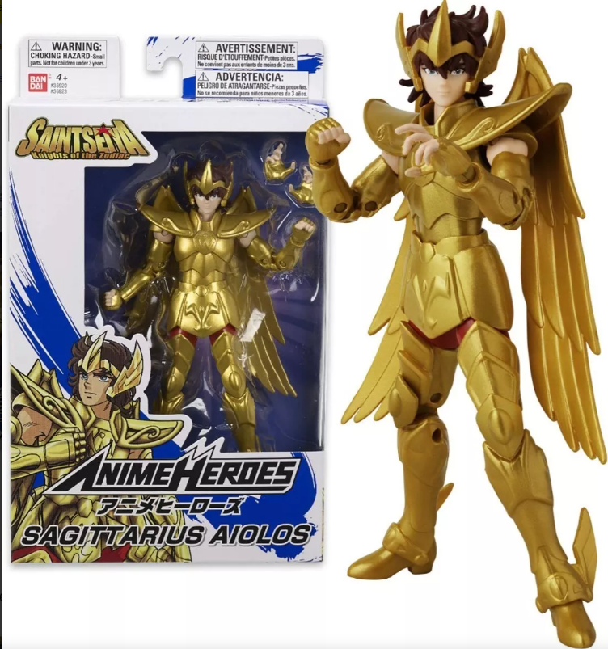
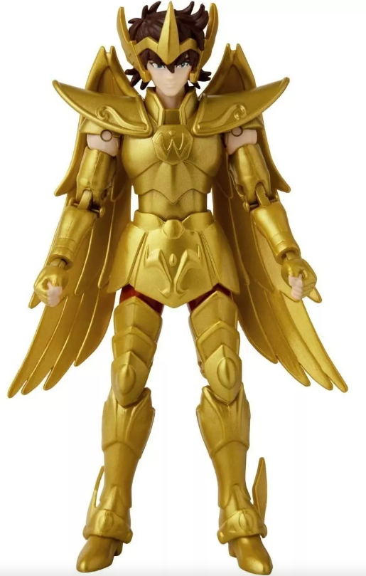
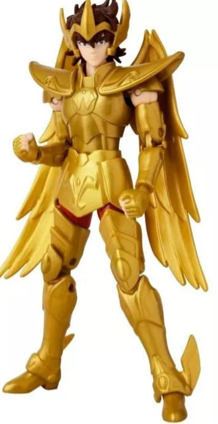

SEIYA DE PEGASO
Descripción
Aiolos de Sagitario, es el famoso Caballero Dorado que murió protegiendo a Athena cuando ella era solo una niña. Aiolos siempre fue el paradigma de lo correcto y lo veían como el Caballero ideal. No se sabe mucho más acerca de Aiolos ya que murió antes de que la historia empezara. Pero ahora los fans de Caballeros del Zodiaco y Saint Seiya pueden imaginar las mas grandes batallas y misiones con estas figuras de 18 cm que tienen más de 16 puntos de articulación!. Cada figura viene con un par extra de manos intercambiables para colocarlos haciendo movimientos específicos de la serie.